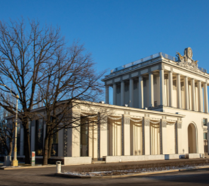

|  |
Выставочный комплекс РЖД
На сегодняшний день павильон находится на реставрации, в будущем здесь планируется открытие Единого выставочного комплекса российских железных дорог.
Павильон построен в 1937-1939 годах по проекту Е. А. Левинсона. В 1949–1954 годах здание было реконструировано при участии архитектора И. З. Вильнера.
В 1939–1941 годах — «Ленинград и северо-восток РСФСР», в 1954–1958 годах — «Ленинград и северо-запад РСФСР», в 1959–1966 годах — «Образование в СССР», в 1967–1982 годах — «Экономика сельского хозяйства».
|